I design and build products.
I’m Sam Beagle. I take products from user research through CAD, electronics prototyping and fabrication. Most of my work so far is wearables and sports equipment.
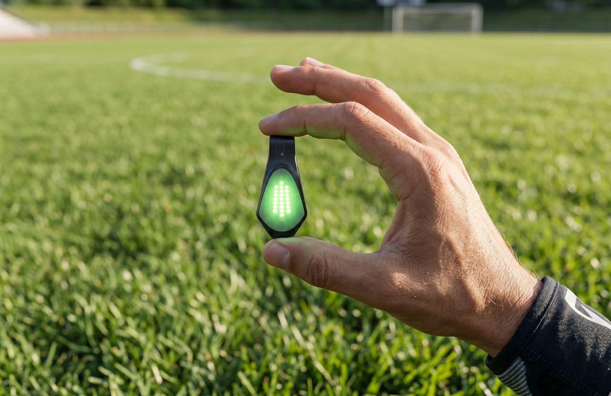
Master’s thesis · 2025–26
Shark Wrap
A clip-on light that turns an athlete’s tracking data into color. It pairs with the tracker they already wear and shifts from green to red as a chosen metric moves, so a player, a teammate or a coach on the sideline can read it in a tenth of a second.
Read the case studyA color shift costs almost no attention mid-play. A number has to be read and judged.
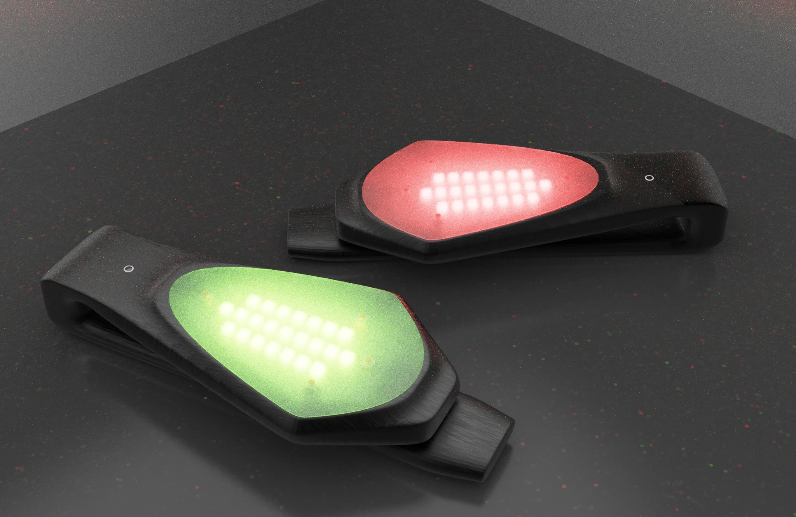
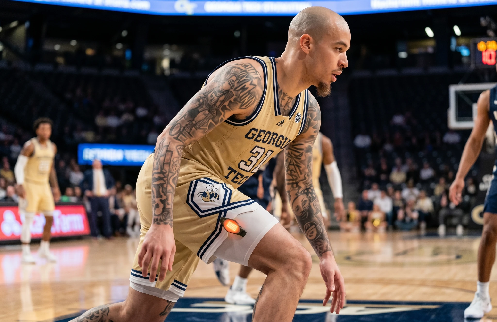
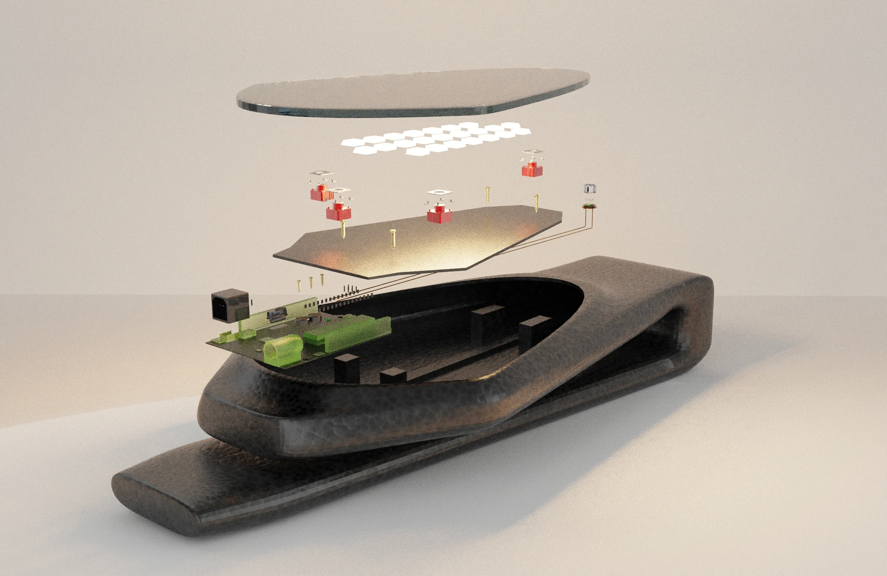
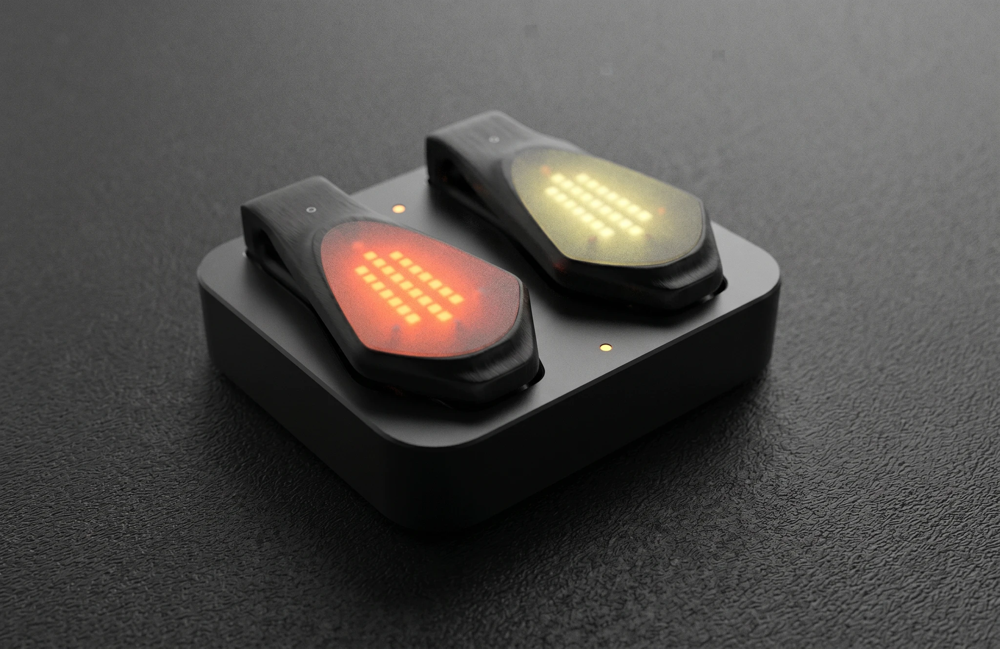
Selected work
Footwear · Wearables · Interaction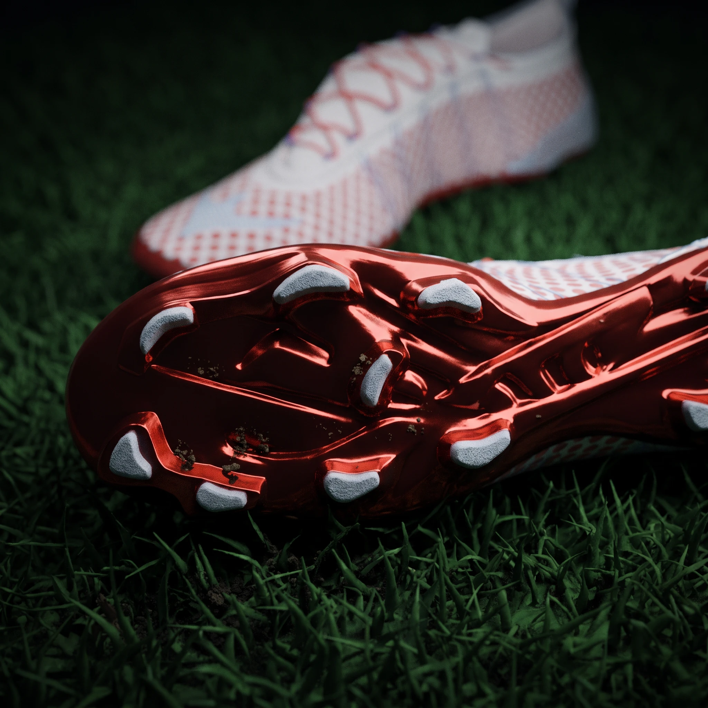
Polka Cleat Concept
A modern soccer cleat that tackles common fit and function problems, styled for elite footballers.
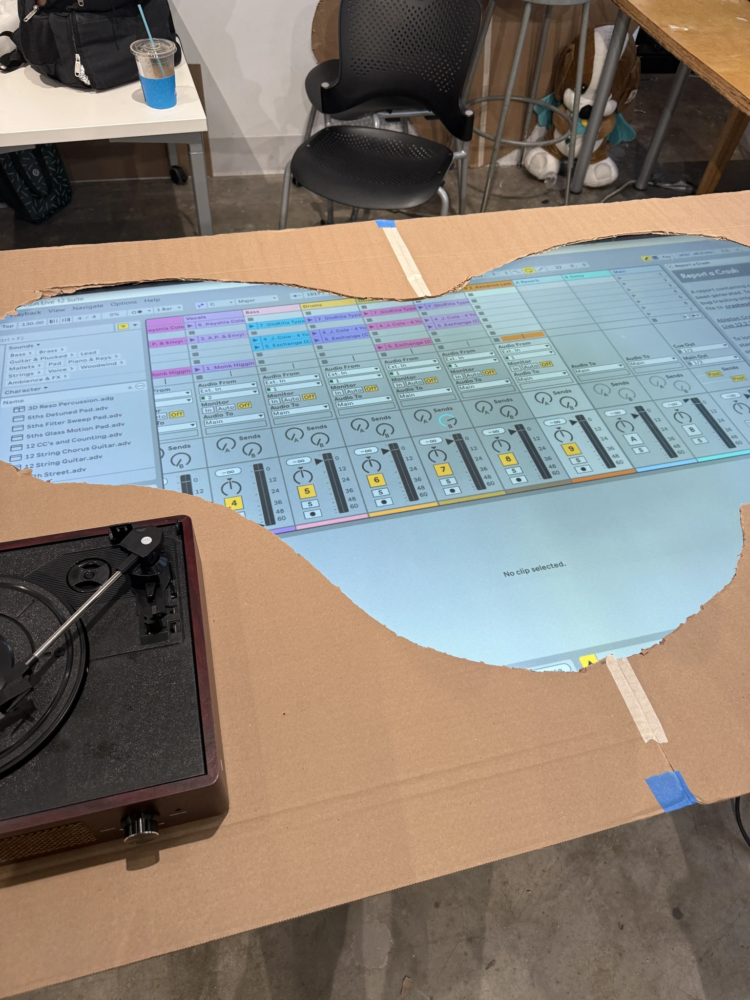
Sample Tracer
An Arduino and Unity installation that shows people where the samples in modern music come from.
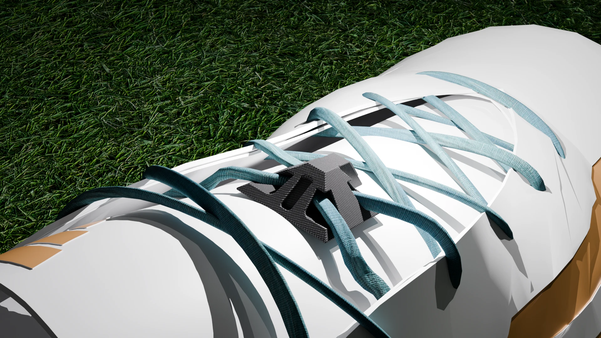
On Site Tracking
A miniature GPS tracker that laces straight into a cleat.
More work
Footwear, hardware, brand and media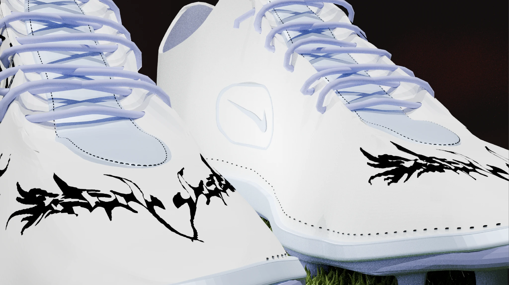
Reaper Cleat Concept
Loose sketches turned into a full suite of cleats for young players Nike could sign.
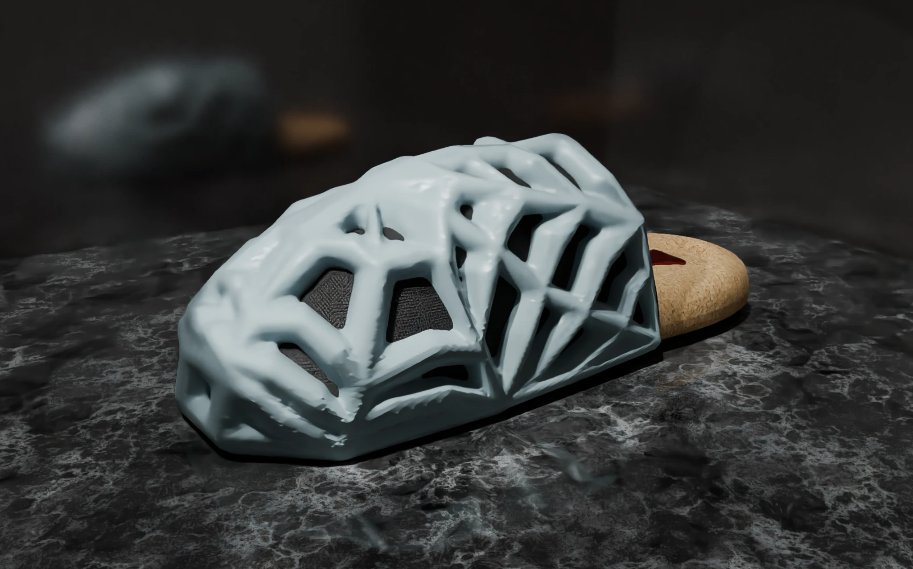
Spider Clog
A lattice clog with a cork footbed, designed with AI tools and 3D modeling.

Moto Safety Plug-In
A plug-in for any maps app that customizes navigation for motorcycle riders.

Knee Deep
Carpenter shorts for hot job sites, designed and sewn by me.
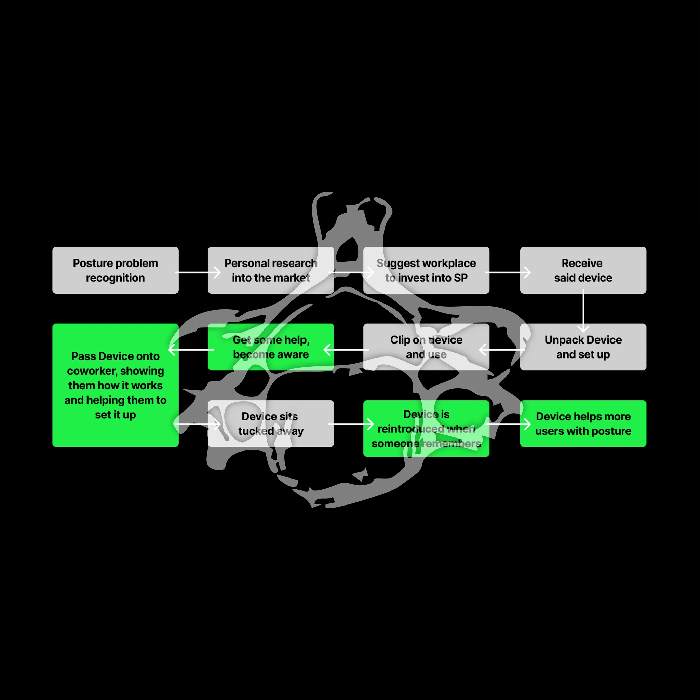
Shared Posture
A posture device that office teams share, so people keep using it.

Secondhand
A self-published coffee table book on vintage clothing and suicide prevention in Atlanta.

GT Soccer Media
Game-day templates and hype posts for the Georgia Tech soccer team’s socials.
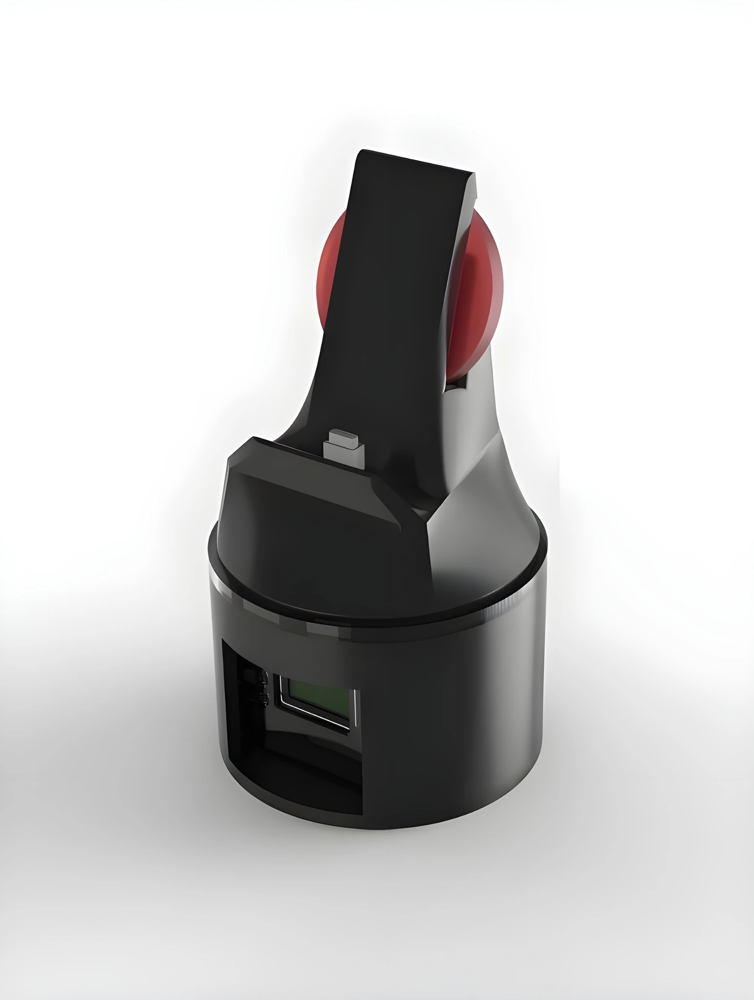
Design Commission
Sketch art, invitations and graphics made for paying clients.
About
I studied engineering at Georgia Tech, played soccer there, and found design by accident: making graphics for the team, then starting a campus vintage market that has raised more than $15,000 for the American Foundation for Suicide Prevention.
Now, with a Master of Industrial Design from Tech, I work on products that help people move, play and recover. Most of my projects start with conversations with athletes.